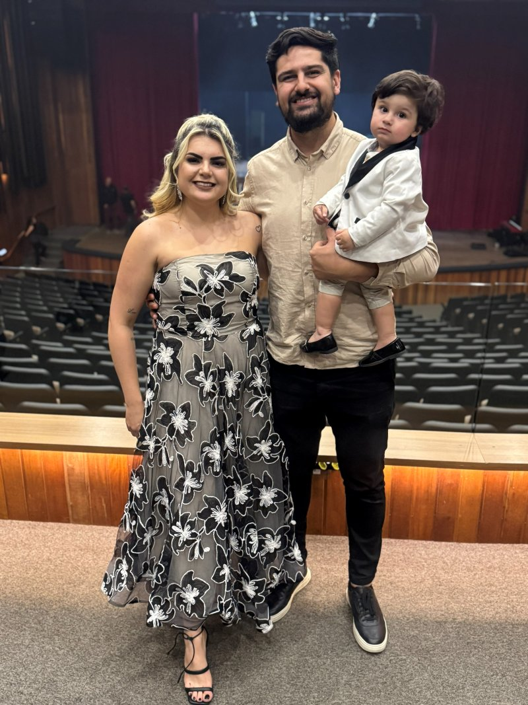

images/foto-sobre.jpg
Quem sou eu?
Uma voz que toca a alma
A música sempre foi mais do que uma profissão para mim; ela é o canal pelo qual expresso minha fé e a sensibilidade que dedico a cada história que ajudo a contar. Como cantora de cerimônias e ministra, entendo que minha missão é transformar momentos solenes em memórias eternas através de uma entrega técnica impecável e, acima de tudo, com alma.
Por trás da voz que ecoa nos altares, existe uma mulher que encontra sua maior força e inspiração no lar. Sou casada com Othávio, meu parceiro de vida e maior incentivador, e sou mãe do João Lucas. Eles são o meu porto seguro e a razão pela qual busco a excelência em tudo o que faço. É desse amor familiar que extraio a sensibilidade necessária para cantar em casamentos, compreendendo profundamente o valor da união que está sendo celebrada.
No ministério, minha entrega é guiada pela reverência. Servir a Deus através do louvor é o que me sustenta. Nas ministrações e igrejas, o foco deixa de ser a técnica e passa a ser a adoração genuína, criando um ambiente onde a congregação pode se conectar com o Eterno Deus de forma profunda e verdadeira.